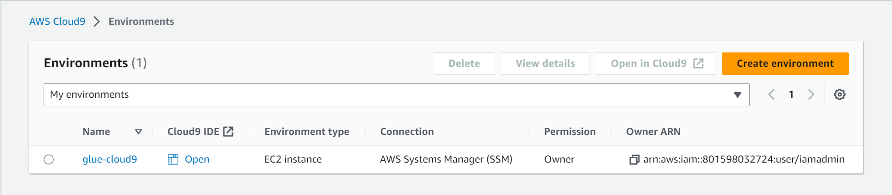
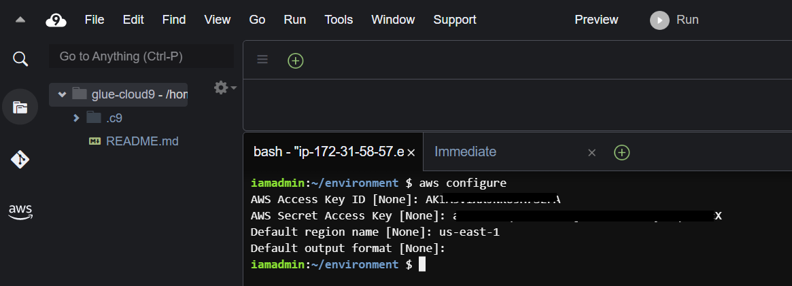
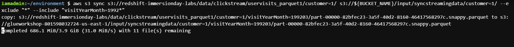
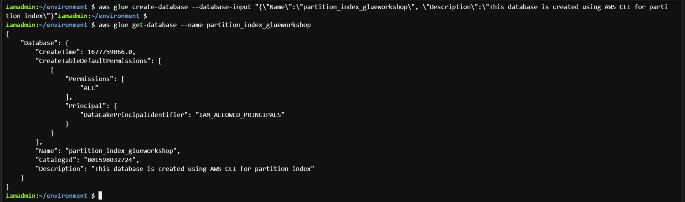
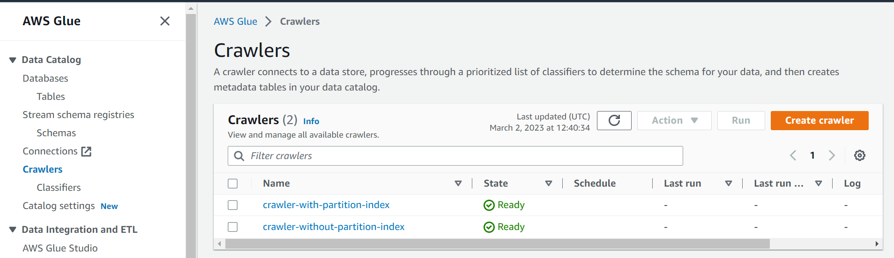
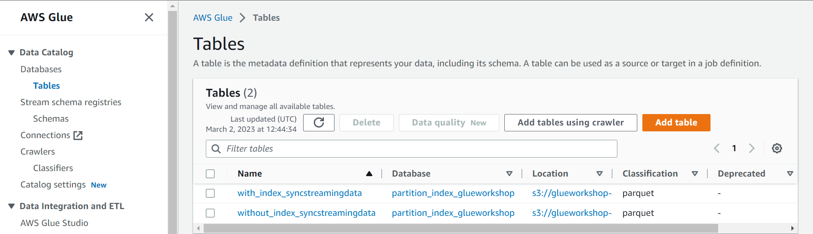
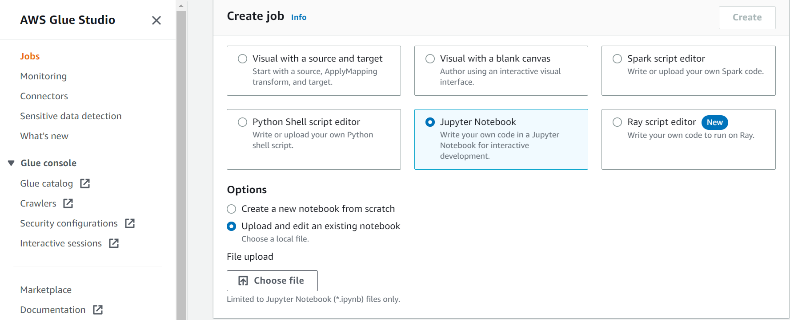

Working with partition indexes in AWS Glue

Credits
This post is adapted from AWS Glue Immersions Day Workshop. For a complete list of all the hands-on labs covered during the workshop, visit the official workshop page. In addition, I have shared here helpful links related to the topic.
- AWS Glue Immersions Day Workshop
- AWS blog post on the same topic. Improve query performance using AWS Glue partition indexes
- Another AWS post focused on Athena query performance. Improve Amazon Athena query performance using AWS Glue Data Catalog partition indexes
- Athena documentation page on creating partitions and indexes on tables. Partitioning data in Athena
- Glue documentation page on partition indexes. Working with partition indexes in AWS Glue
In this post, I have explained how to create partitions and indexes on data lake tables. Then we will test the effect of partition indexes on query performance from the Glue ETL job using Apache Spark SQL.
Below is a summary of the steps followed in this post.
- Create AWS access keys for an IAM user. We will use these keys to access AWS resources from the AWS Cloud9 environment
- Create AWS Cloud9 environment. We will use this environment to perform all the steps mentioned in this post
- Create an S3 bucket and clone some sample data
- Define required policies and roles for Glue crawlers
- Define the Glue database and crawlers, and then prepare the data catalog by running crawlers on an S3 bucket
- Create partition indexes on tables. This step is where we apply partition indexes to the data catalog tables. All the steps before this are pre-requisites to creating a proper environment where we can test the working and performance of partition indexes
- Compare query performance on tables with partition indexes and without it
Step 1: Create AWS access keys for an IAM user
The first step is to create an AWS access key, and we will use it in the Cloud9 environment (created in the next step) to access other AWS resources. If you already have a working key, you may use it; otherwise, you can create it by following the step provided in the AWS docs Managing access keys (console)
Step 2: Create AWS Cloud9 environment and configure AWS CLI credentials
In this step, we will create AWS Cloud9 environment. Cloud9 is a cloud-based integrated development environment (IDE) that lets you write, run, and debug your code with just a browser.
I will be working in us-east-1 (US East - N. Virginia), but you may follow these steps in your region of choice.
- Go to cloud9 console https://console.aws.amazon.com/cloud9/, select your region, and click
create environment - From the Create Environment settings page
- Give a name to the environment e.g.
glue-cloud9 - Keep the rest of the setting as default and click
create - By default, it uses a
t2-microEC2 instance for the environment, which is free tier eligible and has enough processing power to complete all the steps in this post - You may take help from the AWS docs for detailed instructions on creating this environment. Create an EC2 environment with the console
- Give a name to the environment e.g.
- Open the Cloud9 IDE once it is ready

open-cloud9-environment.png
Once the IDE loads, follow these steps from inside Cloud9 IDE.
- Disable the AWS managed temporary credentials
- By default, the EC2 machine provisioned for the cloud9 environment has a role assigned that can be used to get temporary credentials to access other AWS resources. But this access is limited and can only be used to perform some of the tasks in this post. Therefore, we will disable these temporary credentials and use IAM access keys (created in the previous step) to access other AWS resources
- Clicking the
Preferencescog button on the top right corner - Disable Preferences > AWS Settings >
AWS managed temporary credentials
cloud9-disable-temp-cred.png
- Clicking the
- By default, the EC2 machine provisioned for the cloud9 environment has a role assigned that can be used to get temporary credentials to access other AWS resources. But this access is limited and can only be used to perform some of the tasks in this post. Therefore, we will disable these temporary credentials and use IAM access keys (created in the previous step) to access other AWS resources
- Use the bash terminal to configure the AWS CLI using the command
aws configure. For more detailed instructions on configuring AWS CLI, use the AWS docs AWS CLI Configuration basics
configure-aws-cli.png
Never expose your AWS access keys, never! Even though I masked the key in the above image, as a precaution, I deleted it once I was done with it.
Step 3: Create S3 bucket and clone sample data
In this step, we will create an AWS S3 bucket and then populate some data. Later we will create a table on it and use it in a query. We will first create a unique name for a bucket using aws account-id and region. For this, paste the following commands in the bash terminal.
S3 bucket names are globally unique. If I have created a bucket with the name ‘s3://amazing-bucket’, no other bucket can have that name again till I delete my bucket.
AWS_ACCOUNT_ID=`aws sts get-caller-identity --query Account --output text`
AWS_REGION=`aws configure get region`
BUCKET_NAME=glueworkshop-${AWS_ACCOUNT_ID}-${AWS_REGION}
echo ${BUCKET_NAME}Now create a bucket using s3 make bucket (mb) command.

make-bucket-command.png
Once our bucket is ready, we can clone sample data using the following three commands. Each command will take about a minute to complete. These commands will synchronize the contents of our bucket with another bucket (containing the sample data). To read more about s3 sync command use the AWS docs s3 sync objects
aws s3 sync s3://redshift-immersionday-labs/data/clickstream/uservisits_parquet1/customer=1/ s3://${BUCKET_NAME}/input/syncstreamingdata/customer=1/ --exclude "*" --include "visitYearMonth=1992*"
aws s3 sync s3://redshift-immersionday-labs/data/clickstream/uservisits_parquet1/customer=2/ s3://${BUCKET_NAME}/input/syncstreamingdata/customer=2/ --exclude "*" --include "visitYearMonth=1992*"
aws s3 sync s3://redshift-immersionday-labs/data/clickstream/uservisits_parquet1/customer=3/ s3://${BUCKET_NAME}/input/syncstreamingdata/customer=3/ --exclude "*" --include "visitYearMonth=1992*"
s3-sync-command.png
The data is copied into the bucket under the prefix /input/syncstreamingdata/ with partitions on
- /customer=x
- /visitYearMonth=xxxxxx
You can view all the partitions (and objects under them) with the s3 list command, and each partition has one parquet file under it.

s3-partitions.png
Note that S3 bucket data partitions are only logical in the sense that.
- It does not change the way the objects are stored in S3
- It is only a data organization scheme where we change a part of the objects’ S3 URI (or prefix) while keeping the rest the same. For example, in the following example, we have used a scheme where we are changing the s3 objects prefix after the
customer=andvisitYearMonth=words. When using such a prefix scheme, we call them data partitions and can be compared to folders in a hierarchical file system.
s3://bucket/input/syncstreamingdata/customer=1/visitYearMonth=199201/302125b7984f.parquet
s3://bucket/input/syncstreamingdata/customer=1/visitYearMonth=199202/302125b7984f.parquet
s3://bucket/input/syncstreamingdata/customer=1/visitYearMonth=199203/302125b7984f.parquet
s3://bucket/input/syncstreamingdata/customer=2/visitYearMonth=199201/302125b7984f.parquet
s3://bucket/input/syncstreamingdata/customer=2/visitYearMonth=199202/302125b7984f.parquet
s3://bucket/input/syncstreamingdata/customer=2/visitYearMonth=199203/302125b7984f.parquetStep 4: Create IAM policies and roles for Glue crawlers
In this step, we will create some IAM roles and IAM policies that Glue crawlers will use in the next step.
- Using cloud9 environment, create a file with name
iam-policy.jsonwith the following contents.
{
"Version": "2012-10-17",
"Statement": [
{
"Sid": "passRoleGlue",
"Effect": "Allow",
"Action": "iam:PassRole",
"Resource": "*"
}
]
}Using this file, we will now create an IAM policy named passrole-glue-policy. Later we will assign this policy to a role. This policy allows an AWS user or service to transfer its role to other services. To read more about this policy, use the AWS docs page Granting a user permissions to pass a role to an AWS service. To create the policy use command

iam-policy.png
Copy the Arn of the policy created. We will require it in the following steps.
Next, we will create an IAM role and assign it some policies. For this, create a file named iam-assume-policy.json and put the following contents.
{
"Version": "2012-10-17",
"Statement": [
{
"Effect": "Allow",
"Principal": {
"Service": "glue.amazonaws.com"
},
"Action": "sts:AssumeRole"
}
]
}Now create the role AWSGlueServiceRole-glueworkshop and assign required AWS managed policies policies to it with the following commands.
GLUE_ROLENAME='AWSGlueServiceRole-glueworkshop'
aws iam create-role --role-name ${GLUE_ROLENAME} --assume-role-policy-document file://iam-assume-policy.json
aws iam attach-role-policy --role-name ${GLUE_ROLENAME} --policy-arn arn:aws:iam::aws:policy/AmazonS3FullAccess
aws iam attach-role-policy --role-name ${GLUE_ROLENAME} --policy-arn arn:aws:iam::aws:policy/service-role/AWSGlueServiceRoleNext, we will assign the policy we created in the last step to this role.
In the below command, replace the arn with the value you saved in the last step.
aws iam attach-role-policy --role-name ${GLUE_ROLENAME} --policy-arn arn:aws:iam::801598032724:policy/passrole-glue-policy
iam-role.png
Step 5: Define Glue database and crawlers
Create AWS Glue database with the name partition_index_glueworkshop by the command
aws glue create-database --database-input "{\"Name\":\"partition_index_glueworkshop\", \"Description\":\"This database is created using AWS CLI for partition index\"}"You can verify that the database has been created with the command.

glue-database.png
Next, we will create two crawlers. These crawlers will crawl the S3 bucket and create tables from the identified objects. Both crawlers will be same except that the tables created by one crawler will be given the prefix without_index_ and the other given with_index_. To create them use the commands below.
Crawler 1: crawler-without-partition-index
aws glue create-crawler \
--name crawler-without-partition-index \
--role AWSGlueServiceRole-glueworkshop \
--database-name partition_index_glueworkshop \
--table-prefix without_index_ \
--targets "{\"S3Targets\": [{\"Path\": \"s3://${BUCKET_NAME}/input/syncstreamingdata/\"} ]}"Crawler 2: crawler-with-partition-index
aws glue create-crawler \
--name crawler-with-partition-index \
--role AWSGlueServiceRole-glueworkshop \
--database-name partition_index_glueworkshop \
--table-prefix with_index_ \
--targets "{\"S3Targets\": [{\"Path\": \"s3://${BUCKET_NAME}/input/syncstreamingdata/\"} ]}"
create-glue-crawlers.png
We can verify that both crawlers are created and ready to start from the AWS Glue console.

crawlers-console.png
Now we will start both these crawlers.
aws glue start-crawler --name crawler-without-partition-index
aws glue start-crawler --name crawler-with-partition-index
glue-start-crawlers.png
They will take around a minute to scan the S3 bucket and populate tables in Glue Data Catalog. These tables are the same; their names are the only difference.

glue-tables.png
Step 6: Create a partition index on the table
Finally, we have reached a point where we can define the partition index on table with_index_syncstreamingdata. Adding an index does not affect the availability of a table, as the table continues to be available while indexes are being created. To read more about the glue create-partition-index command use the AWS docs glue/create-partition-index.html
aws glue create-partition-index \
--database-name partition_index_glueworkshop \
--table-name with_index_syncstreamingdata \
--partition-index Keys=customer,visityearmonth,IndexName=idxbycustvym
partition-index.png
Step 7: Query performance with partition index
Now to see if there is any benefit in query performance by defining partition indexes on a table, we will use a Spark Notebook from AWS Glue ETL job to query both tables (with and without index).
You can use the sample notebook provided here. It already includes the queries on the tables. Download it from the provided link. download_link
Now follow the below steps to use the provided notebook for the Glue ETL job.
- Go to AWS Glue Studio console , click Jobs on the left side menu, under Create job choose Jupyter Notebook and select the option Upload and edit an existing notebook. Click the
Choose filebutton to upload the downloaded notebook file.
glue-studio.png
- On the next Notebook setup screen provide
- Job name =
glue-notebook - IAM Role =
AWSGlueServiceRole-glueworkshop - Kernel =
Spark
glue-notebook.png
- Job name =
- Once the notebook starts, run all the cells. I have given the details of each cell here.
- Cell 1 : It creates a Spark session
- Cell 2 : It will query the table without any index on it. When I ran the query, the execution time on this table was around
32 seconds
query-1-results.png
- Cell 3 : It will query the table with partition index on it. When I ran the query, the execution time on this table was around
10 seconds
query-2-results.png
- Cell 4 : Calculates the difference in query execution time between the two tables. In my case query on table with partition indexes was faster by 22 seconds .

queries-diff.png
Conclusion
By defining partition indexes on large highly partitioned tables can give significant boost in query performance. Partition indexes are available for queries in Amazon EMR, Amazon Redshift Spectrum, and AWS Glue extract, transform, and load (ETL) jobs (Spark DataFrame and Glue DynamicFrame). When partition indexes are enabled on the heavily partitioned AWS Glue Data Catalog tables, all these query engines are accelerated.